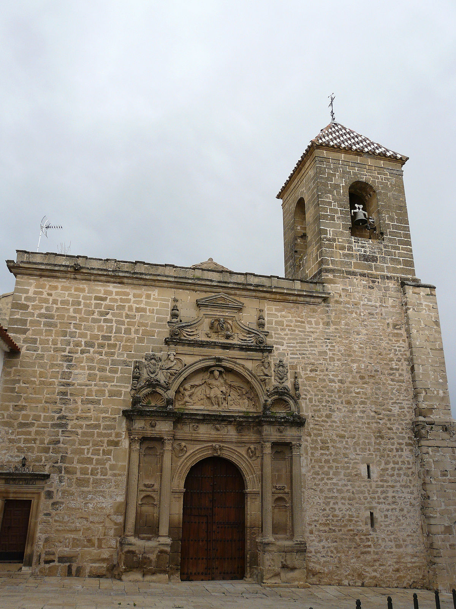
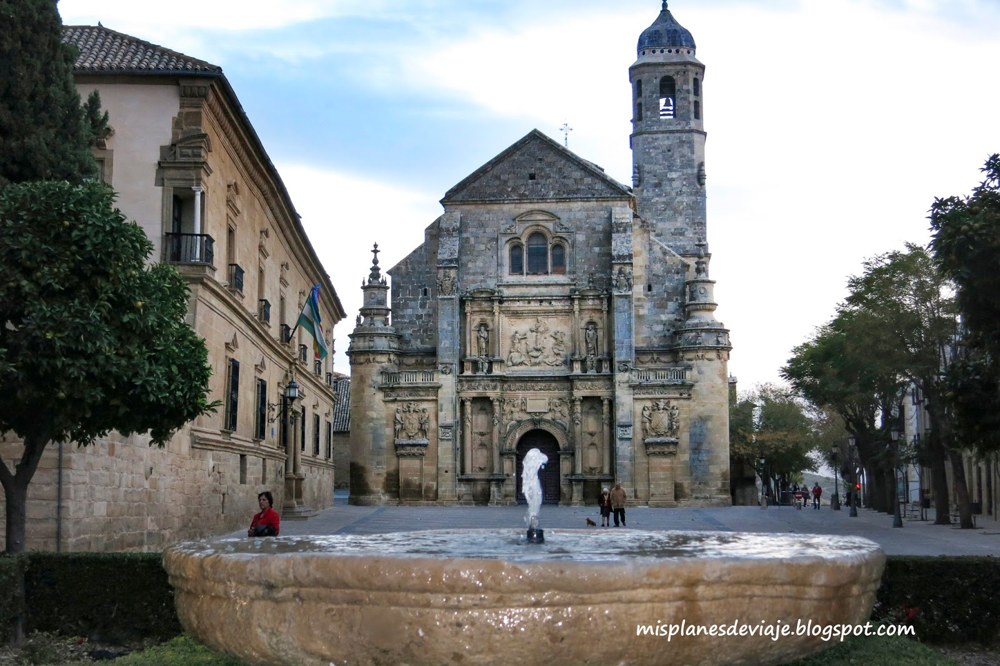
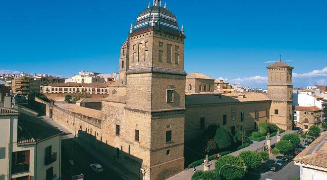

.JPG)
IGLESIA NUESTRA SEÑORA DE LA ASUNCIÓN

ARQUITECTO
El constructor Andrés de Vandelvira, uno de los arquitectos más importantes del Renacimiento español,
dejó su huella principalmente en Jaén, Úbeda y Baeza.
.jpg)
En 1533 habitó en Villacarrillo donde intervino en la iglesia de la Asunción. En la misma,
fundó una capellanía para su hijo Pedro de Vandelvira. En este municipio nacieron la
mayoría de sus hijos, lugar donde reunió la mayor parte de su patrimonio y adquirió una
vivienda que conservó hasta su muerte. Gracias a su mentor Francisco de Luna, trabajó en
pequeñas obras en Orcera, Hornos y Segura de la Sierra.
También, se encargó de un proyecto de modernización de Úbeda construyendo nuevas
instalaciones. Entonces, marchó hacia Sabiote y después a Úbeda, donde realizó las obras
de la Sacra Capilla del Salvador en 1536.
|  |  |  | ||||
| IGLESIA DE SAN NICOLÁS, ÚBEDA |
IGLESIA DEL SALVADOR, ÚBEDA |
HOSPITAL DE SANTIAGO, ÚBEDA |
Por otra parte, se le encargó la iglesia de San Nicolás, el palacio del Déan Ortega, la iglesia
del Salvador, el puente Ariza y otras obras civiles. Además, construyó el palacio de las
Cadenas, el palacio Vela de los Cobos, el Hospital de Santiago o el palacio del marqués de
la Rambla. Todas estas construcciones le llevaron a residir en Úbeda aproximadamente
entre 1536 y 1555.
Seguidamente, adquirió el puesto de maestro mayor de obras en 1553. Durante su vida solo
pudo terminar la sacristía, la sala capitular y la bóveda de enterramiento con las
dependencias altas. Finalmente, modernizó otros templos religiosos del estilo gótico al
renacentista, como la Catedral de Baeza, la iglesia de la Inmaculada Concepción de
Huelma, la basílica de Santa María la Mayor de Linares y el santuario de la Virgen de la Cabeza.
| CATEDRAL DE BAEZA |
BASÍLICA DE SANTA MARÍA LA MAYOR DE LINARES |